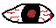
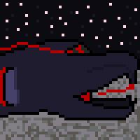
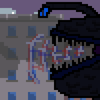
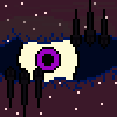
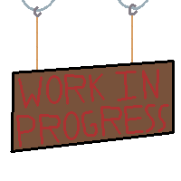

What is Danse Macabre? |
Danse Macabre is a fictional lorebook/ artbook project centered around a distopian past where sins are manifested into creatures, and humans have been granted abilities to maintain the ballance of power on the earth.
A brief history:
In the begining, He created The earth and bountiful vegitations to acompany it. Then, in His lonelyness, He took four pieces of Himself to create the ideal watchers, the Archangel Gabriel, the Archangel Riphiel, the Archangel Michael, and the Archangel Don't speak of him. Next, He created the Heavens, the animals, and the humans. On earth, the watchers guided the humans on earth to aid in their development, making them quickly progress through technological and societal advancements. After many years, humanity developed overindulgence, leading Him to make It What have I done?. It roamed earth, creating creatures out of sins called manifestations, causing all of the watchers to recoil in disgust, leaving earth and society. They waited for Him to answer, but they never got a response. One day, certain humans began developing powers, called awakenings, allowing them to combat the encarnations and restoring the ballence of power in the beings of Earth.
Characters |
Being a loerbook, Danse Macabre has many characters, and due to it still being in development, many of them are unfinished, so some characters may be 'under development'.
Manifestations:

Manifestations are the creatures formed and contorted from the sins of our peers, When we cannot contain ourselfes, they arise
| Hara-Kiri (Cupcake) | The Rows of a thousand scales swallows the pain of those who wasted it all |  |
|---|---|---|
| Vamp (Bethany) | Sercome to it's screech, clawing at the back of your brain to comply |  |
| Void-bound (Episkopos) | Ripping through reality itself, it stares at you. Dropping yourself to the will of it's judgement |  |
Awakenings:
Awakenings are the humans that have been empowered with special abilities to ballence the power on the world, as His last hope
| Petunias | Froliking through flowers, we should heed to her beauty |  |
|---|---|---|
| Apostate | Behold his light, a complex construct of many devistating reflections. They underestimate him, but fear him |
Lore Pages |
This segment contains all of the lore pages that are a part of Danse Macabre (Excluding the character pages that can be found in the Characters section)